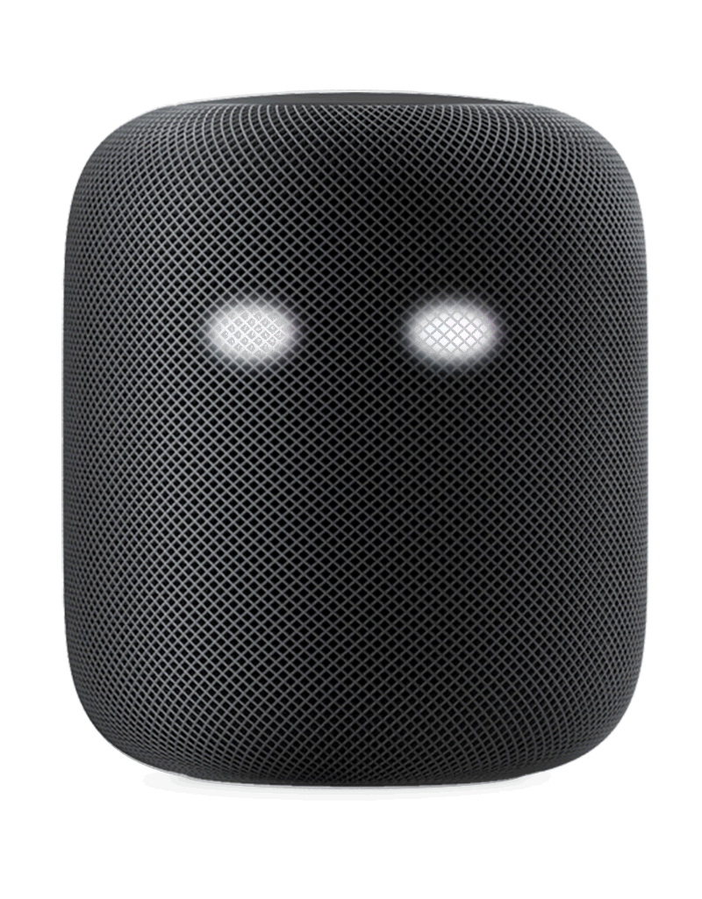

Lights representing the eyes of these devices could be added as LED components behind the mesh of the speaker screen. They would glow with the same color as the device currently emits when activated whenever the device was listening or speaking to the user.
